<mat-sidenav-container fullscreen >
    <button class="butonSidenav" mat-mini-fab (click)="sidenav.toggle()">
        <mat-icon style="color:#000000;">{{row}}</mat-icon>
    </button>
    <mat-sidenav style="width:16rem;" #sidenav mode="side" [(opened)]="opened" (opened)="open()" (closed)="close()">
        <mat-list>
            <span class="titleSidenav">{{nombreUser}}</span>
            <hr style="height:2px;margin:0 10px 12px 10px">
            <a *ngIf="rol ==='Productor'" routerLink="./misColecciones" style="text-decoration:none;">
                <div class="row">
                    <div class="col-3"></div>
                    <div class="col-9"><span class="item" (click)="colecciones(); sidenav.toggle()">Mis colecciones</span></div>
                </div>
            </a>
            <a *ngIf="rol === 'Productor'" routerLink="./inventarios/inventarioProd" style="text-decoration:none;">
                <div class="row">
                    <div class="col-3"></div>
                    <div class="col-9"><span class="item" (click)="inventario(); sidenav.toggle()">Inventario Productos</span></div>
                </div>
                
            </a>
            <a *ngIf="rol ==='Proveedor'" routerLink="./inventarios/inventarioProvee" style="text-decoration:none;">
                <div class="row">
                    <div class="col-3"></div>
                    <div class="col-9"><span class="item" (click)="inventario(); sidenav.toggle()">Inventario Productos</span></div>
                </div>
                
            </a>
        </mat-list>
    </mat-sidenav>

    <mat-toolbar>
        <span style="color:#000000;">{{nombre}}</span>
        <span class="example-spacer"></span>
        <button class="notiLogOut" mat-mini-fab ><mat-icon style="color:#000000;">notifications</mat-icon></button>  
        <button class="notiLogOut" [matMenuTriggerFor]="menu" #menuTrigger mat-mini-fab><mat-icon style="color:#000000;border-radius: 100%;">person</mat-icon></button>
        <mat-menu #menu="matMenu">
        <button mat-menu-item (click)="logOut()">Log out</button>
        </mat-menu>
    </mat-toolbar>
    <div style="margin:0 40px 0 40px;"> 
        <router-outlet></router-outlet>
    </div>
</mat-sidenav-container>
  